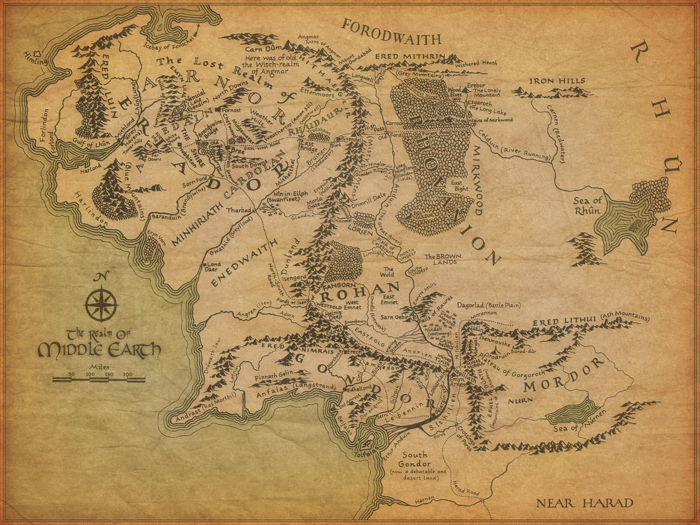
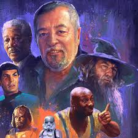

la web de Víctor
Bienvenidos a mi pagina, la esto haciendo y actualizando todos los dias.
Lo primero quiero introduciros en el fantástico mundo de J.R.R.Tolkien, que desde pequeño me ha maravillado tanto. Pero si no eres de las personas a las que les gusta las historias mitológicas, medievales y/o mágicas también les gustará por que la historia y como escribe el autor te engancha en seguida
últimas nocticias que he visto
20/04/2018 - Ayer 19 de abril murió Pepe Mediavilla, voz de Gandalf en español entre otros personajes. Murió a los 77, por problemas de salud que le habían dejado en silla de ruedas en este último año.